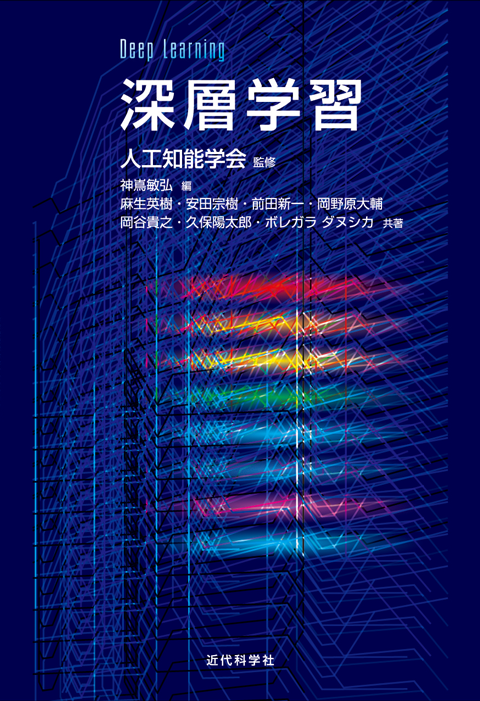

本書の概要
深層学習は，2012年に行われた画像認識のコンペティションで優れた成績を収め，急速に注目されるようになった機械学習の技術です．
本書は，2013年5月〜2014年7月の7回にわたる人工知能学会誌での連載解説「DeepLearning（深層学習）」に大幅な加筆を行い，索引などを追加して書籍としてまとめたものです．2015年時点での深層学習についてのほとんどの話題について解説しています．
各章は独立した読み物となっており，それぞれの話題について個別に知ることができます．一方で，索引を充実させて，深層学習に関する様々なキーワードについて調べることができるようにもしました．
一方で，多数ある深層学習のソフトウェアを用いる方法については述べていません．本書はこれらのソフトウェアを誤用しないために，深層学習の動作原理を紹介し，各手法の適用可能範囲を知っていただくためのものです．
関連情報
本書の関連情報
- 近代科学社（出版元）の本書の紹介：本書の章構成などを掲載しています
- 人工知能学会の特集の紹介：本書の元となった人工知能学会の連載特集の前書きです
- Amazon.co.jp：Amazon.co.jp での本書の販売ページ
- ニューラルネットワーク・深層学習研究の歴史 (pdf)：本書の編集時にまとめた研究の歴史です
深層学習の関連情報
- Neural Networks for Machine Learning：無料で公開されている講義サイト Coursera にある，深層学習の中心研究者 G. Hinton によるニューラルネットの講義
- International Conference on Learning Representations：表現学習など深層学習に関連の問題を扱う国際会議
- deeplearning.net：Y.~Bengio の研究グループがまとめている深層学習の情報
- NETtalk Test：1980年代後半に Sejnowski らが誤差逆伝播法を用いたニューラルネットの実用性を示したデモ
- Who Invented Backpropagation?：誤差逆伝播法に関連したアイデアは Rumelhart 以前にもいろいろな形で提案されていました
- Who introduced the term “deep learning”：“deep learning”という用語は，現在の深層学習研究が始まる前の1986年にすでにあるとのこと
- Deep Learning：やはり中心研究者であるY.~Bengioが執筆中の書籍のドラフト稿
- 「深層学習」が登場するツイート：日本語の『深層学習』という訳語は，ネット上では2011年5月には使われていました
正誤表
第1刷 (2015/11/05)
この刷では誤りは見つかっていません．